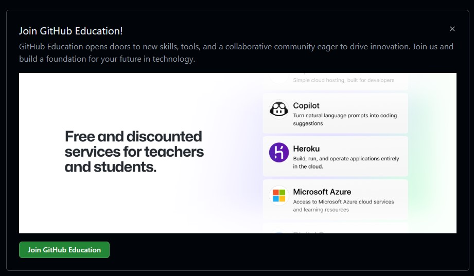

Explanation
The ideas behind the session, written for faculty with no technical background. Each part starts with what's in it and why you should care.
Part 1: 🧠 The Brain
What does this include?
These are the terms in this part. Read them once now, and they'll be familiar when we get to them.
- Agent: AI that works toward a goal in steps, using tools, instead of only answering.
- Chat: the conversation window you type into. It's the interface. It isn't the agent.
- Model: the AI "brain" that reasons and writes. Every agent is built around one.
- Tokens: the small pieces of text a model reads and writes. They set the limits and the cost.
- Context: everything the model can see right now: your prompt, the conversation, files, instructions, results.
- Tools: the actions an agent can take: read, search, edit, run, fetch.
GitHub Copilot, the tool we use today to run agents on our own files, is explained in Part 2.
Why does it matter?
It's hard to direct something if you don't know what's doing the thinking.
1.1 What is an AI agent?
An AI agent uses a model, context, instructions, and tools to work toward a goal through multiple steps.
An agent follows a simple loop:
Goal → Inspect → Plan → Act → Check → Revise
Agents do more than generate an answer. They can:
- inspect their environment
- take actions
- work through several steps
- evaluate results
- continue until the goal is reached
1.2 Chat vs. agent
CHAT AGENT
You ask → AI answers → You do the work You give a goal → AI examines → plans → acts → checks
Chat is conversational. It is excellent for questions, writing, and brainstorming. You carry the output back into your work, and you coordinate the steps yourself.
Agent starts from a goal. The agent may inspect files, search, create and edit files, run commands, analyze data, use tools, inspect results, and correct itself.
Chat is the interface. An agent is a way the AI can operate.
You still use a chat window as your main interface. What happens behind that window can range from answering a question to taking agentic actions.
1.3 Where can you run models and agents?
The same model can be reached from many places.
- A website chat: ChatGPT, Claude, Copilot on the web. You bring the material to the AI.
- An app: desktop or mobile chat apps. Same idea, closer to your files.
- Inside a tool you already use: Word, Excel, a browser, an email client.
- Through an API: one program calling a model from another (see What is an API?).
- On your own computer, inside your project: the agent works where your files are.
In this session the agent works on files on our own computer, inside a text editor, with GitHub Copilot. The agent reads and edits your files and runs commands on your machine. The model behind it usually runs on the provider's servers, so the text it reads is sent there. There are other ways to do this. We use this one because it puts the agent next to your files. The editor and Copilot are explained in Part 2.
1.4 What can an agent do?
An agent can:
- read one or many files
- search a workspace
- write and edit
- create websites
- run Python
- analyze CSVs
- generate visualizations
- call APIs
- use external tools
- work with Git
- test output
- detect errors and revise
An agent cannot be assumed to do these correctly:
- know facts it was not given
- interpret ambiguous requirements every time
- decide what matters pedagogically without guidance
- replace human review
1.5 What is a model?
MODEL = the reasoning and generation engine
AGENT = model + context + instructions + tools + actions
Models differ in reasoning ability, speed, coding strength, multimodal support, context capacity, and cost.
1.6 Which models are out there?
How models differ, in plain words:
- Open weights vs. closed. Open-weight models (Llama, DeepSeek, Qwen, GLM, MiMo) can be downloaded and run on your own hardware or a university server. Closed models (GPT, Claude, Gemini) are used through the maker's service.
- Where your data goes. A closed model sends your text to the provider's servers. A model running on your own machine does not. Even then, check what else the agent is connected to, because a tool or extension can still send data out. This matters for student data and unpublished research.
- Reasoning vs. speed. Some models "think" longer and are better at multi-step tasks. Others answer fast and cheaply. Many families offer both.
- Context size. How much material fits in one conversation.
- Cost. Varies by provider, model, and how you run it. Open weights are not automatically free. Running a model yourself needs hardware, and hosted services charge per token or by subscription.
- Availability inside Copilot. Copilot's model picker offers some of them (GPT, Claude, Gemini, and others). You can add other models with your own API key or a local runner such as Ollama (see Optional: add models to VS Code Chat).
The main model families, as a short reference. Names change every few months, so check the date below.
| Family | Maker | Where from | Notes |
|---|---|---|---|
| GPT | OpenAI | US | Default in ChatGPT and in many Copilot plans. Strong all-rounder |
| Claude | Anthropic | US | Strong at long documents, writing, and agentic coding. It makes a cameo in this session |
| Gemini | US | Very large context, strong multimodal. Built into Google Workspace | |
| Llama | Meta | US | Open weights. You can download and run it yourself |
| Mistral | Mistral AI | France | Open and hosted models. Popular in Europe |
| Grok | xAI | US | Tied to X. Available by API |
| DeepSeek | DeepSeek | China | Open weights, very low cost, strong reasoning models |
| Qwen | Alibaba | China | Open weights, many sizes, strong coding. Widely used locally |
| Kimi | Moonshot AI | China | Long context, agentic use |
| GLM | Zhipu AI | China | Open weights, strong coding |
| MiMo | Xiaomi | China | Open weights, reasoning-focused |
Last checked: September 30, 2026.
Models are interchangeable brains. The workflow you learn today does not depend on which one you pick.
1.7 What are tokens?
Models do not read words. They process text in small units called tokens.
Tokens are not exactly words. A short word may be one token. A long word may be several.
Everything counts. The prompt uses tokens. The documents you attach use tokens. The conversation history uses tokens. The answer uses tokens.
Why faculty should care:
- Context limits. A model can hold only so many tokens at once.
- Long documents. A very long source can fill most of the window and crowd out everything else. Give the agent the chapter, not the textbook.
- API pricing. When you pay per use, you pay per token.
- Unnecessary context. Extra material costs tokens and can distract the model.
- Efficiency. Give the agent what it needs, not everything you have.
1.8 What is context?
Prompt + Conversation + Files + Instructions + Tool results = CONTEXT
- The agent can only reason from what it can see.
- Relevant context matters more than an elaborate prompt.
- Project files provide persistent context.
- Good project organization makes agents more useful.
Don't keep explaining the project. Put the project where the agent can understand it.
1.9 The five pillars (bridge to the VS Code docs)
VS Code's own guide describes five pillars of good agent results: harness, model, context, tools, and prompt. This table maps this lecture's words to those terms.
| This lecture | VS Code docs | What it is |
|---|---|---|
| The Brain | Model | the AI that reasons and generates |
| The Infrastructure | Harness + Tools | Copilot Chat in VS Code, plus the actions it can take (read, edit, run, search) |
| The Task | Prompt + Context | what you ask, plus what the agent can see |
Read the original: Introduction to agent-first development on code.visualstudio.com.
Part 2: 🖥️ The Infrastructure
What does this include?
- Text editor: a program that edits plain-text files directly.
- VS Code: a text editor that grew into a full project workspace.
- Repository: a project folder whose history Git tracks.
- Git: the tool that records, compares, and restores changes.
- GitHub: a website that stores repositories online.
- Clone: a local copy of a GitHub repository, still connected to the original.
- GitHub Copilot: the AI layer inside VS Code that we use today to run agents on our own files.
- Extensions: apps that add features to VS Code. Copilot is one.
- Setup guide: the steps to install all of this, plus how to add more models and what an API is.
Why does it matter?
An agent works on files in a project. The tools in this part are how you give it a project.
2.1 What is a text editor?
A text editor is a program for writing and changing plain-text files. Notepad is one. VS Code is one.
Unlike Word, a text editor edits the file directly. It does not hide the structure inside a document format.
Text-based file types: .txt .md .html .css .js .py .json .csv
Why it matters for agents: agents can inspect and directly modify these files.
2.2 What is VS Code?
A text editor that has evolved into a complete project workspace.
VS CODE = Files · Editor · Terminal · Git · Extensions · AI Agents
You do not need to become a software engineer. VS Code is useful because most academic work can be represented as files in a project.
2.3 Where do the files live?
- A local folder: the normal case. You open a folder on your computer and VS Code treats it as the project. The agent reads and writes inside that folder.
- A synced cloud folder: a OneDrive, Google Drive, or Dropbox folder works the same way, because it is still a folder on your computer that happens to sync. It's handy for keeping course material in one place. Watch out for sync conflicts while an agent is editing.
- A repository: a folder whose history Git tracks and GitHub backs up. This is what the rest of this section is about.
2.4 What files can it work on?
Short answer: it depends on the file and the tools. VS Code opens almost any file, but an agent works most reliably with plain text. PDF, Word, and Excel files may need a built-in tool, an extension, or a conversion step before the agent can read or edit them dependably.
Preferred answer: simple text. Plain-text files (.md, .txt, .csv, .html, .py) are the ones an agent can inspect, edit precisely, and Git can track line by line. A Word document is a sealed box. A Markdown file is an open page.
If you can, keep the source in plain text. Export to Word or PDF at the end.
2.5 What is a repository?
A repository is a project folder whose files and history are tracked with Git.
A local repository lives on your computer. A remote repository lives online, usually on GitHub.
A repository can contain documents, data, code, websites, instructions, media, and the project's history.
course-project/
├── syllabus.md
├── assignments/
├── data/
├── website/
└── AGENTS.md
2.6 What is Git?
Git is the tool that tracks a repository's history. In practice it:
- records changes
- compares versions
- restores earlier versions
- makes agent changes safer
When an agent can change many files, version control becomes especially valuable.
2.7 What is GitHub?
GitHub is a website that stores repositories. It:
- hosts repositories online
- synchronizes projects between computers
- supports collaboration
- stores history
- integrates with Copilot
- publishes websites
2.8 Clone: GitHub → VS Code
GitHub repository
↓ clone
Local repository in VS Code
↓ edit / agent work
Git
↓ commit + push
GitHub repository
Clone makes a local copy of a GitHub repository on your computer, still connected to the original.
Commit records a set of changes as a checkpoint in the local history.
Push sends your commits back up to GitHub.
You can ask an agent to do the clone for you. This is the exact prompt used for this project. It is saved as clone-repository.prompt.md in the repository. The website example on the Examples page has a walkthrough with the rest of the prompts.
I want to work locally on the CCE 2026 repository:
https://github.com/nimdvir/cce-2026
Clone it into my normal local GitHub workspace as `cce-2026` if it is not already present.
If the repository already exists locally, **do not overwrite or discard any local work**. First inspect the repository and run `git status`. If there are uncommitted changes, stop and tell me what you found before pulling anything. If the working tree is clean, fetch from `origin` and update the local `main` branch using a safe fast-forward-only pull.
Verify before finishing:
- the remote `origin` points to `https://github.com/nimdvir/cce-2026`
- the current branch is `main`
- the local branch is up to date with `origin/main`
- the repository opens correctly as the VS Code workspace
Do not create, edit, delete, commit, or push project files yet. This task is only to get the repository safely available locally and ready for work.
When finished, report the local folder path, current branch, Git status, and whether it is synchronized with GitHub.
Notice what the prompt does: it states the goal, names the exact repository, says what must not happen, asks the agent to inspect before acting, and asks for a report at the end. Part 3 explains why each of those matters.
GitHub can also publish a repository as a website (GitHub Pages). This site is the example, explained on the Examples page.
2.9 What is GitHub Copilot?
GitHub Copilot is installed as an extension (extensions are explained in 2.11). It is the part of the workspace that runs the agent.
GitHub Copilot is the AI layer inside the VS Code workspace. It has several parts:
- Copilot Chat: the conversation panel where you talk to the agent.
- Code suggestions: inline completions while you type (useful, but not the focus today).
- Ask, Plan, Agent: three modes of the same chat panel, explained in 2.10.
- Model selection: pick which model does the thinking.
- Tools: the actions the agent can take in your workspace.
- Project context: the agent can see your files and instructions.
VS Code + Your Files + Copilot = Agentic Workspace
Verified teachers and students can get Copilot through GitHub Education at no cost. Eligibility and benefits change, so check the program's current terms (see the Setup guide).
2.10 Copilot Chat: Ask, Plan, Agent
The same chat panel works in three modes.
| Ask | Plan | Agent |
|---|---|---|
| Understand, explain, answer questions, explore possibilities, troubleshoot conceptually. | Inspect the problem, understand the project, propose a sequence of changes, identify affected files. | Create and edit files, run commands, use tools, perform multi-step work. |
| No edits, no commands. | Waits for your approval before anything changes. | Verifies and iterates until the task is done. |
Copilot Chat is the interface. Ask, Plan, and Agent are different ways of using that interface.
ASK → PLAN → AGENT → REVIEW
You will see this again in every example.
2.11 What are extensions?
Extensions are apps for VS Code. VS Code is the platform; extensions are the apps.
Examples: GitHub Copilot · Python · Markdown tools · database tools · visualization tools · other AI assistants (Claude, Codex). GitHub Copilot itself is installed as an extension.
2.12 Setup guide (do this before or after the session)
Why it matters: all the examples run on this setup. It takes about twenty minutes, and most of it is free for faculty and students.
- Create a GitHub account. Sign up at github.com. Turn on two-factor authentication. Fill in a profile. You are done when you can sign in at github.com.
-
Apply for GitHub Education. Faculty and teachers apply for teacher verification; students apply for student verification. The benefits include GitHub Copilot. Start at github.com/education. GitHub's guide Apply to GitHub Education as a teacher lists what you need. You are done when your application is approved.

-
Install VS Code. Download from code.visualstudio.com/download, install, and launch. You are done when VS Code opens.
- Sign in to GitHub from VS Code. Use the Accounts menu in the bottom-left corner. You are done when your GitHub name shows in the corner.
- Clone a repository. Create or locate one on GitHub, then clone it into VS Code. Use
https://github.com/nimdvir/cce-2026as the example, or let an agent do it with the clone prompt shown above. You are done when the folder opens as a workspace. - Enable GitHub Copilot. Follow Set up GitHub Copilot in VS Code. Sign in, open Copilot Chat, find Ask / Plan / Agent, and pick a model. You are done when Copilot Chat answers a question.
- Add extensions as needed. Python, Markdown, database tools.
- Optional: add more models. Not needed for this session. See Optional: add models to VS Code Chat below.
Key repository workflow: GitHub repository → clone → work in VS Code → commit → push.
Optional: add models to VS Code Chat
You do not need this for the session. The models that come with Copilot are enough. This is for later, when you want to try a different "brain".
There are three separate cases:
- Models that are already included. Open Copilot Chat and click the model name in the chat input box. That list is the model picker. Pick one and keep working. Nothing to install.
- A model from another provider, with an API key. In the model picker, choose Manage Language Models (the gear icon), or run Chat: Manage Language Models from the Command Palette. Select Add Models, choose the provider (for example Anthropic, Gemini, or OpenAI), and enter the API key that provider gave you. You pay that provider for what you use. If your Copilot plan comes through an organization, an administrator can turn this option off.
- A local model on your own computer. Install Ollama and the official Ollama extension for VS Code from the Extensions view. VS Code's older built-in Ollama option is deprecated, so use the extension. Your text stays on your machine, but you need a reasonably strong computer.
One catch for cases 2 and 3: a model must support tool calling to work in Agent mode. If it does not, it will not show up in the model picker for agents.
The menus change between VS Code versions. Check the current instructions: AI language models in VS Code.
What is an API?
An API lets one piece of software communicate with another service.
Agent → API → External Service
When you chat on a website, you talk to the model. With an API, a program talks to the model for you. That is how VS Code can use a model from a provider other than GitHub.
An API key is the password for that connection. It identifies you, and the provider bills you for what the key uses. Keys, cost, permissions, and security all come with it.
Never publish an API key in a repository. Do not paste one into a prompt or a file that gets committed.
2.13 Beyond Copilot: models, other agents, MCP
Why it matters: Copilot is the environment used today, but the "brain" can be swapped, and the same workflow carries over. You don't need any of them to get started.
- Models and model selection: Copilot's model picker lets you choose among available models. They differ in quality, speed, and cost, so match the model to the task. Some models also let you set a thinking effort, from low (fast, simple fixes) to high (deep reasoning, multi-file work). To add models that are not in the list, see Optional: add models to VS Code Chat.
- Other agents in VS Code: Claude (Anthropic), Codex (OpenAI), other AI extensions and specialized coding agents. Most of them read
AGENTS.mdtoo, and some add an instruction file of their own (Claude readsCLAUDE.md). Check the agent's documentation before assuming one file serves them all. - MCP and external tools: a standard way to connect agents to outside tools and data: databases, GitHub, Drive, web services, enterprise systems. Advanced and optional.
More links are in the Resources section of the Examples page.
Part 3: 🎯 The Task
What does this include?
- Goal: the outcome you want.
- Context: the files and information the agent needs.
- Constraints: what it must preserve or avoid.
- Prompting checklist: seven things to say in any task.
- Project context: keeping knowledge in the workspace instead of retyping it.
Why does it matter?
The quality of what you get back depends mostly on what you asked for and what you gave the agent to work with.
3.1 What makes a good agent task?
GOAL + CONTEXT + CONSTRAINTS = TASK
- Goal: what outcome do you want? Bad: "Fix my course." Better: "Update this syllabus and schedule for Spring 2027."
- Context: what does the agent need? Syllabus, schedule, policy files, screenshots, URLs, CSVs, an existing site, reference documents.
- Constraints: what must it preserve or avoid? Do not change grading weights · do not invent missing dates · preserve the existing design · do not commit · flag uncertainty · use only supplied data.
Goal: Update my syllabus for Spring 2027.
Context: Here are the syllabus, schedule, and assignments.
Constraints: Don't change grading weights; flag anything uncertain.
That worked example is, almost word for word, a prompt saved in this project's repository, in update-syllabus.prompt.md:
The course files are in syllabus/.
Update the course for Spring 2027 without changing grading weights. Identify inconsistent dates and flag anything requiring judgment.
The first line is the context. Here syllabus/ stands for your own course folder. The second sentence is the goal and one constraint. The last sentence is two more constraints. That's three lines, and the agent has what it needs.
3.2 Prompting agents
A checklist for any task you give an agent:
- be explicit about outcomes
- provide the source files
- name the authoritative source
- state boundaries
- tell the agent when to ask
- tell it to inspect before editing
- ask it to verify afterward
In Copilot Chat, you can attach files with the + button, or type # to point at a file or the whole workspace.
The prompt that wrote the pages you are reading follows every item on this checklist. It names the spec, lists the source files, says which one wins when they disagree, sets boundaries, tells the agent what to leave as a TODO instead of inventing, and asks for a report. See the website example on the Examples page, or open write-site-content.prompt.md in the repository.
3.3 Context instead of giant prompts
| Giant prompt | Project context |
|---|---|
| Re-explains the course, policies, preferences, and conventions every time. | Those things already live in source files, README, AGENTS.md, and the workspace structure. |
Move knowledge from the prompt into the workspace.
Part 4: 🔄 The Workflow
What does this include?
- The workflow loop: understand, plan, act, review, verify, repeat.
- Review: what to inspect, and the execution report you should always ask for.
- Workspace: the organized folder the agent works in.
AGENTS.md: standing instructions for a project.- Reusable prompts and skills: saved instructions you run again.
- Git: checkpoints that keep agent work reversible.
- SWOT: the strengths, weaknesses, opportunities, and threats of agents.
Why does it matter?
One good result is luck. A repeatable result is a workflow.
4.1 A reliable agent workflow
UNDERSTAND → PLAN → ACT → REVIEW → VERIFY → REPEAT
Mapped to Copilot:
- Ask → understand
- Plan → decide how
- Agent → execute
- You → review and verify
4.2 Reviewing agent work
What to inspect after an agent finishes:
- files changed
- diffs
- terminal output
- generated output
- previews
- tests
- Git status
By default, Copilot asks for your permission before it runs a terminal command. Read the command before you allow it. VS Code lets you turn on auto-approval for commands. Leave that off until you know what you are approving.
"Completed" does not necessarily mean "correct."
Always ask for a detailed execution report. End every task by asking the agent to tell you exactly what it did. A good report covers:
- what it changed, file by file
- what commands it ran, and what they returned
- what it checked, and how
- what it skipped, could not do, or was unsure about
- what is left for you to decide
You can add one line to any prompt:
When you finish, give me a detailed execution report: every file you changed, every command you ran, what you verified and how, and anything you skipped or were unsure about.
The report is not proof. It tells you where to look. The clone prompt in Part 2 ends this way, and so do the other prompts used to build this site.
4.3 What is a workspace?
A workspace is the environment holding related project materials.
course/
├── source/
├── assignments/
├── data/
├── website/
├── prompts/
└── AGENTS.md
A well-organized workspace helps in five ways:
- Organization. Related material is in one place.
- Discoverability. The agent can find what it needs.
- Relevant context. What the agent sees is what matters.
- Separating inputs from outputs. Source material stays untouched; generated material has its own folder.
- Reducing accidental changes. Clear structure makes it harder to edit the wrong file.
4.4 What is AGENTS.md?
Prompt: "Do this now."
AGENTS.md: "Always work this way in this project."
AGENTS.md is a plain-text file at the top of a project. Agents that support it, including Copilot, find it on their own and read it before they start. Some agents also have an instruction file of their own. Claude, for example, reads CLAUDE.md the same way. Example rules:
- don't invent facts
- inspect existing files first
- preserve accessibility
- use existing naming conventions
- don't commit or push unless told
- verify changes
See this repository's own AGENTS.md on GitHub.
4.5 Reusable prompts
Save prompts you expect to repeat. Keep a prompt library. Parameterize repeated tasks so one prompt serves many semesters.
Examples: semester updates, syllabus reviews, course sites, data analysis.
In VS Code, a saved prompt is a small file in the .github/prompts/ folder whose name ends in .prompt.md. The top of the file says what the prompt is for and which mode runs it. The rest is the prompt. This is the syllabus prompt from Part 3, now saved as a file:
---
agent: agent
description: Update the course in syllabus/ for Spring 2027. Use Plan mode first, then Agent.
---
The course files are in syllabus/.
Update the course for Spring 2027 without changing grading weights. Identify inconsistent dates and flag anything requiring judgment.
To run it, open Copilot Chat and type /update-syllabus. Next semester, change one year in the file and run it again.
The prompts for this project are saved this way. See .github/prompts/ in the repository, and the index in presentation/prompts.md. Each example walkthrough also links to its own prompts.
4.6 Skills
A skill is a reusable set of instructions and procedures for performing a type of task.
A skill contains:
- the procedure
- domain conventions
- validation steps
- tool use
- standardized outputs
For a real one, see the syllabus-consistency skill in the syllabus example's walkthrough. It tells the agent how to check a syllabus revision for inconsistent dates, grading weights, links, and policy changes, and what to report.
4.7 From prompt to workflow
PROMPT → one task, typed once
REUSABLE PROMPT → .github/prompts/update-syllabus.prompt.md
PROJECT INSTRUCTIONS → AGENTS.md
SKILL → skills/syllabus-consistency/SKILL.md
WORKFLOW → several steps, chained and repeatable
The files on the ladder are real. Open them: update-syllabus.prompt.md · AGENTS.md · the syllabus-consistency skill in the syllabus walkthrough.
This is the subtitle of the talk. From Prompting to Workflows.
4.8 Git in the workflow
With Git, changes remain visible, reviewable, and reversible.
Commit before an agent task. Review the diff after. Revert if needed.
4.9 Agents: strengths, weaknesses, opportunities, threats (SWOT)
Why it matters: the agent works for you, but you are still responsible for the result. A SWOT lays out both sides.
Strengths
- Works where your files are. An agent reads, searches, creates, and edits many files in one task.
- Does multi-step work. It plans, acts, checks its result, and revises.
- Runs tools. Python, data analysis, charts, website builds, Git.
- Repeatable. Saved prompts,
AGENTS.md, and skills make the next run look like the last one.
Weaknesses
- Hallucinations and errors. Agents can invent plausible information, misunderstand ambiguous requirements, and make technically valid but undesirable changes.
- No knowledge it was not given. It does not know your course, your policies, or your students unless the files say so.
- No pedagogical judgment. It cannot decide what matters for your teaching without guidance.
- Limited context. A model holds only so much at once. Too much material crowds out what matters.
Opportunities
- Recurring academic work. Semester updates, course sites, data analysis, document conversion, and courseware (see the Examples).
- Building without being an engineer. Websites, scripts, and automations become possible for faculty who could not build them before.
- From casual use to a workflow. One good prompt becomes a reusable prompt, then project instructions, then a skill.
- A choice of brains. Models are interchangeable, so the workflow you learn carries over when you switch.
Threats
- Privacy. Student data, grades, FERPA-sensitive material, research participants, unpublished research, institutional information.
- Unreviewed changes. An agent can change many files quickly. A mistake you don't catch becomes your mistake.
- Academic integrity. Unclear AI use erodes trust between you and your students.
- Leaked keys and costs. A published API key can be used, and billed, by someone else.
What to do about it
Delegate work, not responsibility.
- Human review: read the diff, the output, and the execution report before you accept anything. "Completed" does not mean "correct."
- Privacy: keep student data, grades, FERPA-sensitive material, research participants, unpublished research, and institutional information out of prompts, files, and repositories. Check what is in a file before you hand it to an agent or publish it.
- Version control and reversibility: inspect changes, commit checkpoints, revert, recover.
- Academic integrity: be explicit with students about how AI is used in a course. Say what the agent did and what you did. Use agents for preparation and feedback, not as a substitute for judgment. The grade, the policy, and the decision remain yours.
- Keys: never publish an API key in a repository.
Next → Part 5: The Examples